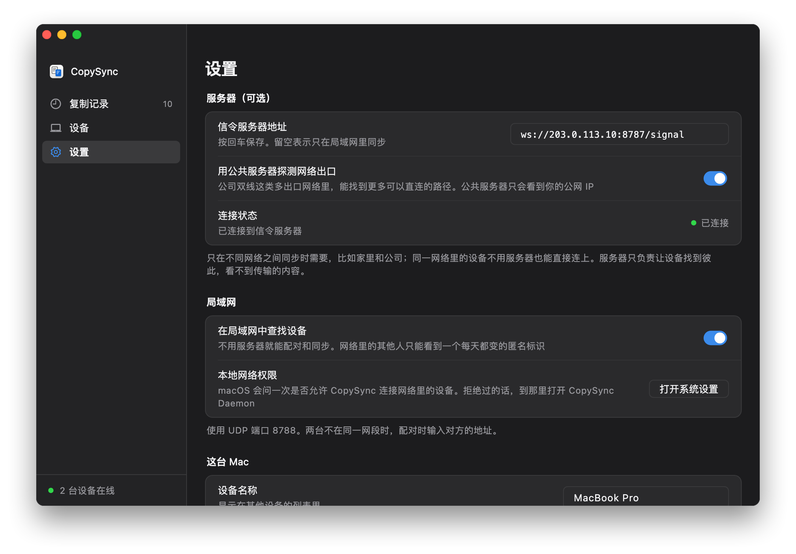

所有电脑都直接连它
服务器在公网上，每台电脑不管在哪个网络里，都能直接连上。复制的内容优先在两台电脑之间直连传输；打不通直连时经服务器中转，内容依然加密。
- 信令，TCP 8787。每台电脑一直连着它，用来发现对方、配对、交换连接信息。
- 直连。两台电脑在不同网络里时，靠 NAT 打洞直接相连，大多数家庭和公司网络都能打通。
- 中转，UDP 3478 与中转端口。打不通直连时经服务器转发，内容依然加密，速度受服务器带宽限制。
开始之前
- 一台云主机
- Linux，x86_64 或 ARM64 都行，最低配置就够，服务器只占约 15 MB 内存。需要 root 权限。
- 一个公网 IP
- 云主机自带的公网 IP 就行，最好是固定的（弹性 IP）。地址变了，每台电脑都要重新填。
- 能登录它
- 能用 ssh 登录，或者用云厂商网页上的远程终端。
- 国内的云主机
- 域名没有备案时，客户端里要直接填 IP，不能填域名，原因见下面的常见问题。
第 1 步
在安全组里放行端口
在云厂商的控制台里，给这台云主机的安全组添加下面三条入站规则。
| 协议 | 端口范围 | 来源 | 用途 |
|---|---|---|---|
| TCP | 8787 | 0.0.0.0/0 | 信令 |
| UDP | 3478 | 0.0.0.0/0 | STUN 与 TURN |
| UDP | 32768-60999 | 0.0.0.0/0 | 中转端口 |
- 叫法不一样：有的云厂商叫「防火墙」或「网络 ACL」，都是这一项。
- 中转端口由系统随机分配，范围以服务器为准：运行
cat /proc/sys/net/ipv4/ip_local_port_range查看，安装脚本最后也会打印出来。 - 系统防火墙：开着 ufw 或 firewalld 的话，这三条也要放行，安装脚本最后会给出命令。
第 2 步
运行安装脚本
把公网 IP 带给安装脚本，它会装好服务器、注册为开机自启的 systemd 服务，最后显示客户端要填的地址。
- 用 ssh 登录服务器，比如
ssh root@203.0.113.10（换成你的公网 IP）。 - 逐行运行，最后一行换成你的公网 IP：ARM 服务器把
amd64换成arm64。curl -LO https://github.com/baiyuze/pasteferry/releases/latest/download/pasteferry-server-linux-amd64.tar.gz tar xzf pasteferry-server-linux-amd64.tar.gz cd pasteferry-server-linux-amd64 sudo ./install.sh 203.0.113.10 - 最后显示的
ws://203.0.113.10:8787/signal就是客户端要填的地址。
- 注册为 systemd 服务，开机自动运行，配置在
/etc/pasteferry/server.env。 - 升级：下载新版本，解压后再运行
sudo ./install.sh，原来的配置保留。 - 也可以用 Docker：见服务器部署说明。
$ sudo ./install.sh 203.0.113.10 ▶ 安装二进制到 /usr/local/bin ▶ 写入 systemd 单元 ▶ 生成配置 /etc/pasteferry/server.env（中转地址 203.0.113.10） ▶ 启动 ✓ 已启动 安装完成：pasteferry-server 2.2.0 在每台电脑的 PasteFerry「设置 → 信令服务器地址」填： ws://203.0.113.10:8787/signal 配置 /etc/pasteferry/server.env 日志 journalctl -u pasteferry-server -f 重启 systemctl restart pasteferry-server 卸载 sudo ./install.sh uninstall 防火墙需放行：TCP 8787（信令）、UDP 3478（STUN 与 TURN）、UDP 32768-60999（中转端口，系统随机分配）
第 3 步
检查能不能访问到它
在任意一台电脑的浏览器里打开 http://203.0.113.10:8787/healthz（换成你的公网 IP），看到下面这一行就通了。
{"status":"ok","version":"2.2.0"}
打不开的话，看下面的常见问题。
第 4 步
在每台电脑上填地址
打开设置
在每台电脑上打开隔空贴，进入「设置」。
填公网地址
在「信令服务器地址」里填
ws://203.0.113.10:8787/signal（换成你的公网 IP），按回车保存。看连接状态
「连接状态」变成绿色的「已连接」就好了。还没配对的话，在「设备」里配对。

还没装 App？见快速开始。
| 状态 | systemctl status pasteferry-server |
|---|---|
| 日志 | journalctl -u pasteferry-server -f |
| 重启 | sudo systemctl restart pasteferry-server |
| 配置 | /etc/pasteferry/server.env，改完重启服务 |
| 升级 | 下载新版本，解压后再运行 sudo ./install.sh，原来的配置保留 |
| 卸载 | sudo ./install.sh uninstall |
常见问题
填域名连不上、填 IP 却能连？
域名没有备案时，国内的云厂商会拦截访问它的明文 HTTP 请求，返回一个跳转到拦截页的响应，实测 8787 这样的非常用端口也一样。WebSocket 握手也是一个 HTTP 请求，所以同样被拦，客户端就显示未连接。
服务器地址里直接填 IP 就行，比如 ws://服务器IP:8787/signal；或者给域名备案。
要多大的配置？
最低配置就够。服务器只占约 15 MB 内存，平时只转发很少的信令消息。复制的内容能直连时不经过它；只有打不通直连、走中转时，速度才受它的出口带宽限制。
设备之间显示「中转」，不是「直连」？
刚连上时显示中转、过一会儿变成直连是正常的：先用中转保证能用，空闲时再换直连。一直是中转，说明两台电脑之间打不通，常见于端口随机分配的 NAT 或严格的防火墙。内容同样加密，只是速度受服务器带宽限制。
想用 HTTPS（wss://）？
可以放在 HTTPS 反向代理后面，客户端填 wss:// 开头的地址，代理需要支持 WebSocket 升级。国内的域名需要备案。STUN 与 TURN 走 UDP，不经过反向代理，安全组照样要放行。
一台云主机，
在哪儿都能同步。
版本 2.2.0，免费开源。macOS 13 及以上；Windows 10、11；Linux（x64 与 ARM64）。
服务器的完整部署说明（含 Docker 与全部参数）